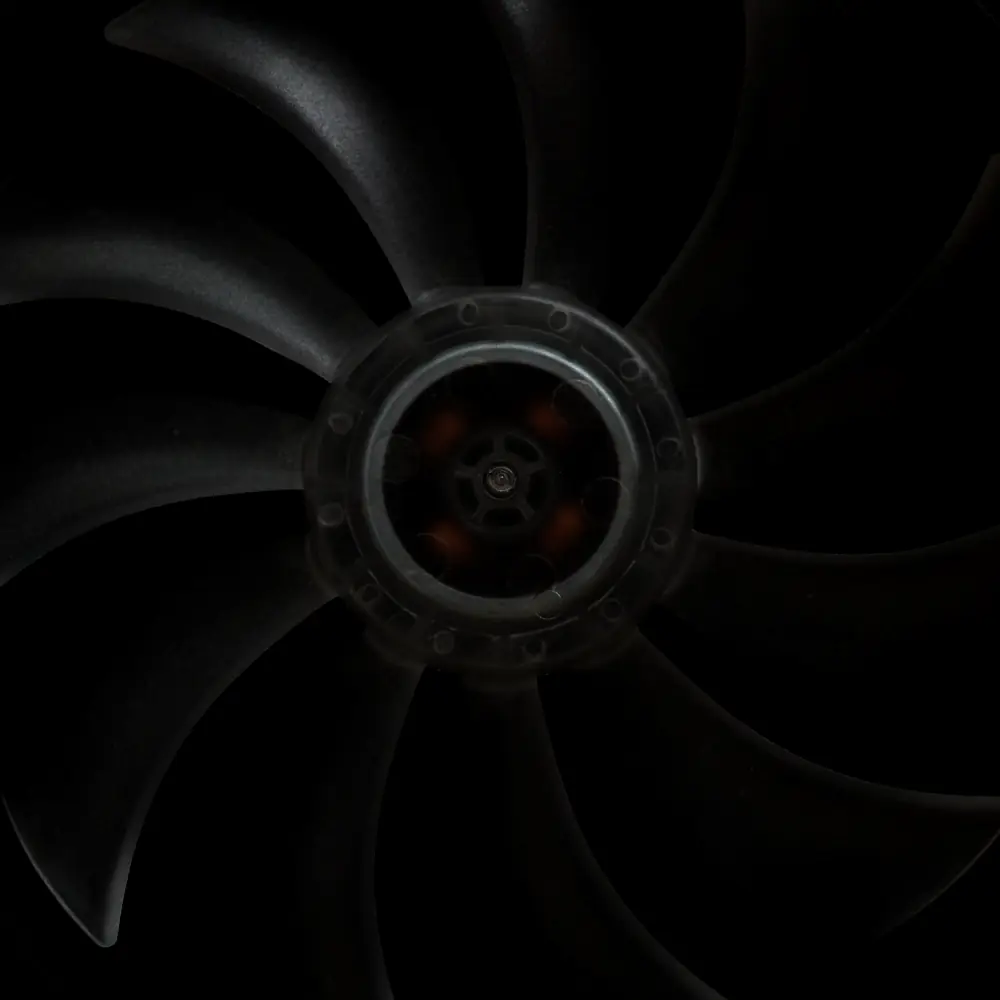
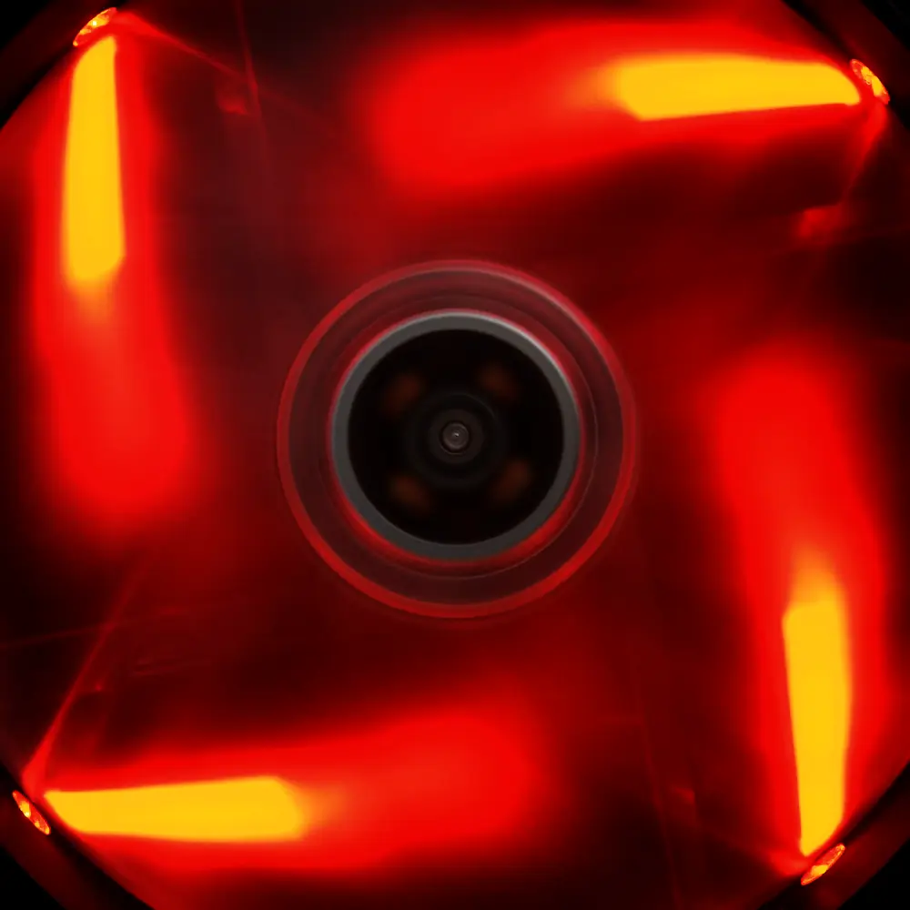
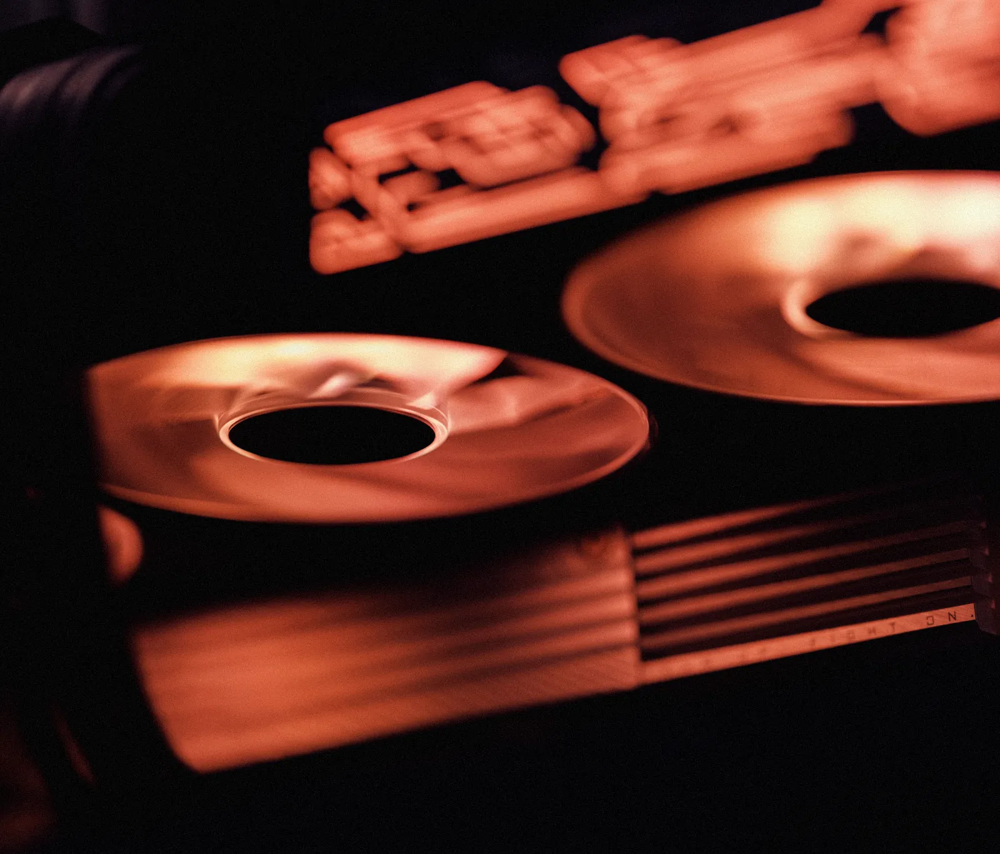

One machine.Run flatout.
REDLINE One is a single desktop workstation around the GX9900: 48 GB of memory, 600 W, and a fan curve that stops completely when you don't need it. One configuration, built by hand in Singapore, 6 a week.
Scroll fast. The readout along the bottom is live.

It idles at zero.
Scroll hard. Keep going.
Below 50 °C the GX9900's three fans don't turn at all — the card sits at 34 °C on 31 W and makes no sound. It takes real, sustained work to wake them.
State: Idle · runs the card's own power and fan curves off how fast you're actually scrolling. Stop, and it idles back down.


The card
GX9900. 48 GB, one cable.
16 × 3 GB of memory on a 512-bit bus at 32 Gbps: 2,048 GB/s, +14% past the fastest card you can buy today. 128.8 TFLOPS of FP32.
And 600 W — exactly what one 12V-2×6 connector is rated to carry. We don't run it past the cable.
Read the spec sheetCooling
No water in it.
We built a 720 ml custom loop against this machine. It ran the card 4 °C cooler and wanted fresh coolant every 12 months. We shipped air.
7 × 140 mm fans move 336 m³ of air an hour at full load — enough to carry 900 W out of the case with the exhaust only 8 °C over the room.
How the air worksBurn-in
259,200readings per sensor, before it ships
Every REDLINE runs 72 hours at full load on our bench before it's boxed — one reading a second from every temperature, fan and power sensor in it. The log is on the drive when you open it. If a machine can't hold 600 W for three days here, it doesn't leave.
What happens in the nine daysOne configuration. S$11,480
GST included, 9 working days from order to dispatch, 3 years parts and labour, and a service visit at month 24 on us. There's nothing to choose because we already chose.